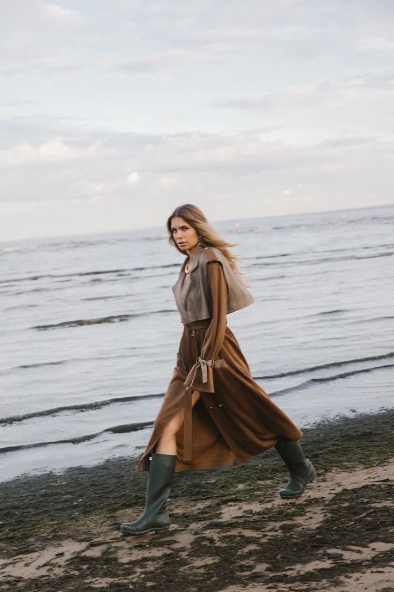
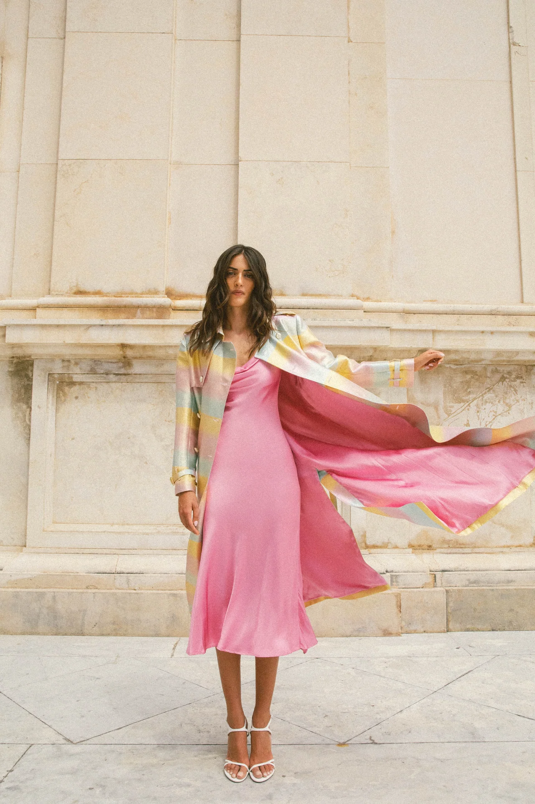
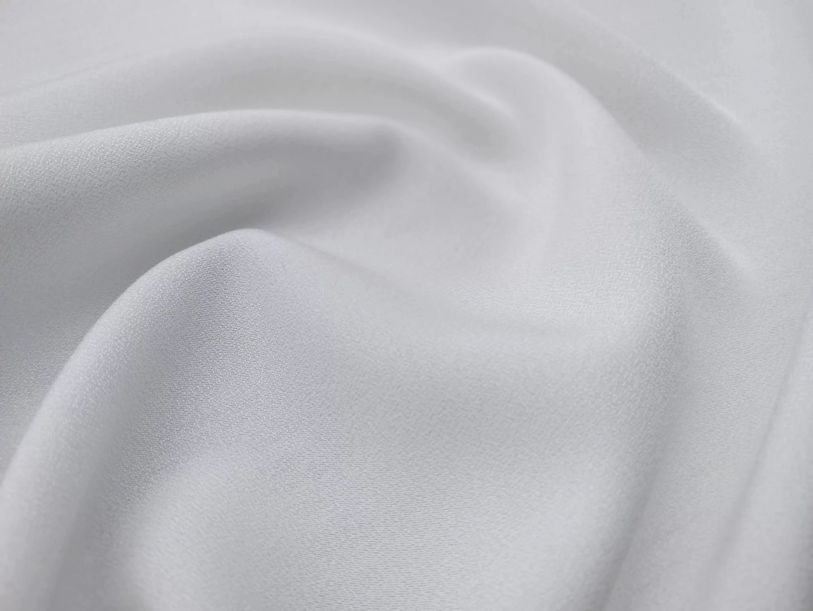
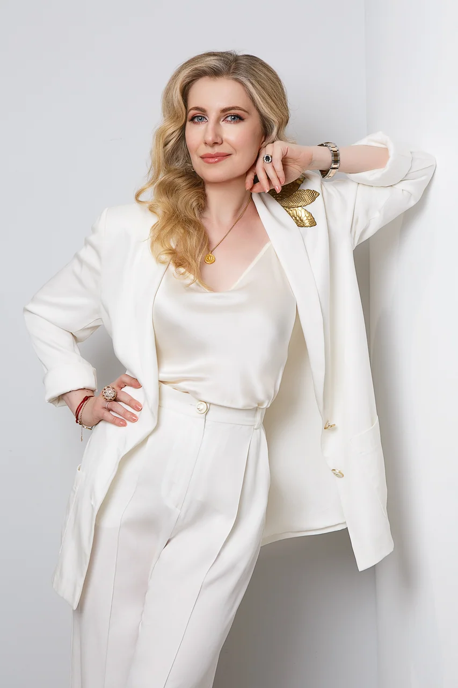
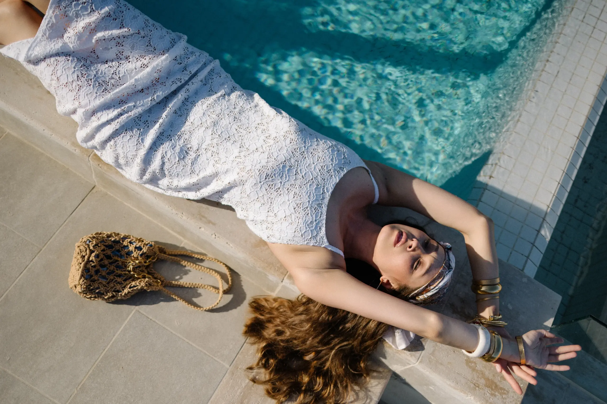

Вашапартия.


Цвет, который остаётся в памяти.

Одежда, в которой слышен
ваш собственный голос.
Гардероб
с характером.
Точный крой. Натуральные ткани.
Свобода быть разной
и оставаться собой.
Составы, размеры, цены и наличие — в официальном магазине бренда.
Вещи оживают
в движении.
Коллекционный фильм
BASHARATYAN V
Редкие ткани.
Личная история.
Вещи Bespoke создают
специально для вас.
Всё начинается
с прикосновения.
Шёлк, шерсть, кашемир. Авторские фактуры и ленточное вязание ribbon knit — одна из визитных карточек бренда.
В линии Bespoke образ отшивают по индивидуальным меркам. Ткань, посадку и детали обсуждают лично.
Обсудить свой образ Посмотреть Bespoke в магазине
Вероника
Башаратьян.
Основательница и креативный директор
От культурных кодов
к вашему личному почерку.
Вероника основала бренд в Лондоне в 2010 году. Училась в London College of Fashion и Istituto Marangoni в Милане. В её коллекциях традиции разных стран встречаются с современным силуэтом.
Коллекции производятся в Великобритании. Сегодня мир BASHARATYAN V можно открыть в Лондоне и Дубае.
История бренда
Каждый день
по-своему.
Начнём
с вас.
Найти свой силуэт, познакомиться с коллекцией или обсудить вещь по индивидуальным меркам.